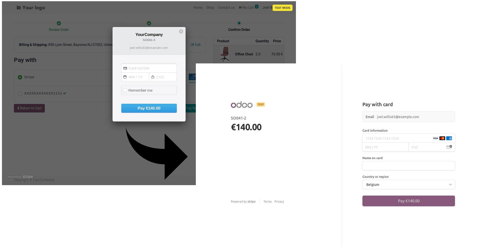
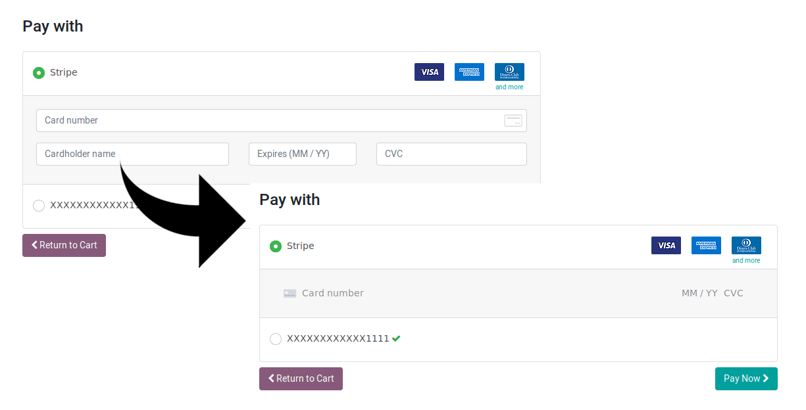

<section class="oe_container">
    <div class="oe_row oe_spaced">
        <div class="oe_span12">
            <h2 class="oe_slogan">Stripe - Strong Customer Authentication</h2>
            <h3 class="oe_slogan">Add support for strong customer authentication as part of the EU PSD2</h3>
        </div>
        <div class="oe_span12">
            <p class='oe_mt32'>
                The PSD2 - the second edition of the Payment Services Directive - is coming into full effect in
                the European Union (EU) and the European Economic Area (EEA) on September 14th, 2019. This
                directive may indirectly impact your business by requiring stronger authentication mechanisms
                for online payments.
            </p>
            <h2 class="oe_mt32">Am I impacted by the PSD2 directive?</h2>
            <p>You are impacted by this change if all of these statements applies to your business:
                <ul>
                    <li>You are legally based in the EU/EEA</li>
                    <li>You accept payments from customers based in the EU/EEA</li>
                    <li>You accept payments via cards (credit/debit)</li>
                </ul>
            </p>
            <h2 class="oe_mt32">What should I do if I am impacted?</h2>
            <p>
                This directive does not bind you legally to do anything in particular regarding
                your business processes - it applies to payment processors, acquirers and banks.
                Legally, you don't have to do anything to comply with this directive - it does not
                apply to you.
            </p>
            <p>
                You might however be indirectly impacted because some online payment flows will
                change for customers that pay online - they might need to authenticate themselves during
                a transaction that previously didn't require it. This is why Odoo is adapting some of
                its integration with payment acquirers to avoid disruptions in your business flows.
            </p>
            <p>
                If you use Stripe and are impacted by the PSD2 directive, then simply installing this
                module will avoid problems for your online customers during their payment flow. No extra
                configuration is needed once the module is installed.
            </p>
            <h2 class="oe_mt32">What happens if I don't install this update?</h2>
            <p>If you don't install this update, some of your customers may be unable to pay you.
                There is no reason not to install it if you are impacted by the directive.</p>
            <h2 class="oe_mt32">I'm not impacted by the PSD2, should I install this module anyway?</h2>
            <p>While not required, installing this module remains a good idea nonetheless since
                it will switch your instance to newer - and thus more future-proof - APIs of the Stripe
                payment acquirer.
            </p>
            <h2 class="oe_mt32">What will changes for my online customers</h2>
            <p>The interface displayed to your customers will change when they pay you online.</p>
            <p>If your Stripe acquirer is configured with the payment flow 'Redirection to the acquirer website'
                in Odoo, the small payment overlay will be replaced by a full-screen interface.
            </p>
            
            <p>If your Stripe acquirer is configured with the payment flow 'Payment from Odoo'
                    in Odoo, the credit card input form will look slightly different.
            </p>
            
            <p>The rest of the payment experience remains the same.</p>
            </div>
    </div>
</section>


